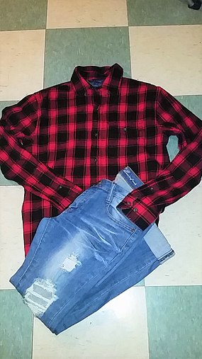
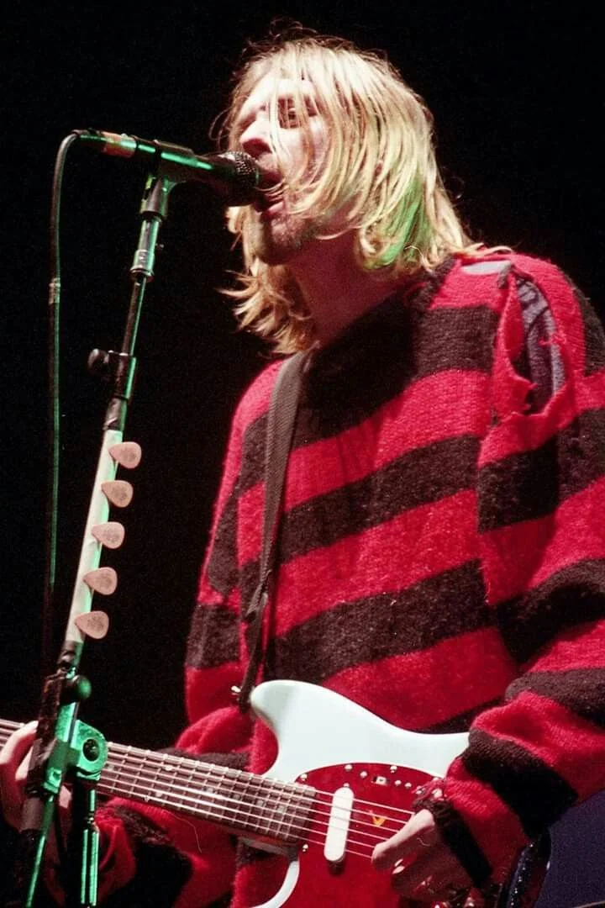

| Home | The Beginnings | Grunge Clothing | Important Albums | Defining Artists | More Info |
Grunge clothing of the late 1980s and throughout the 1990s consisted mainly of thrift-store clothing, grunge clothing was not about making a statement. Popular Seattle grunge bands of the 90s such as Nirvana, Soundgarden and Pearl Jam disseminated their fashion to the masses. Their Fashion comprised of ripped jeans and flannel shirts, Converse were also common, especially favored by vocalist of Nirvana Kurt Cobain. Large oversized sweaters were alo frequently worn. Today many enjoy dressing in the grunge fashion of the 90s, it has been reshapen now but still holds key elements of the past, just because someone dresses grunge does not mean that they must enjoy grunge music they may just enjoy dress in the style.
 